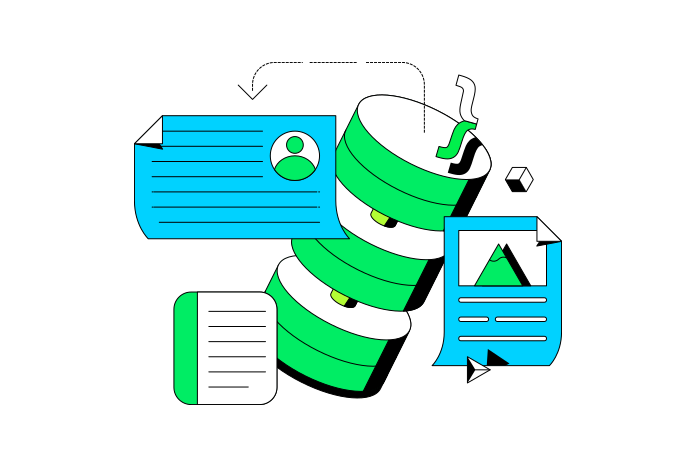
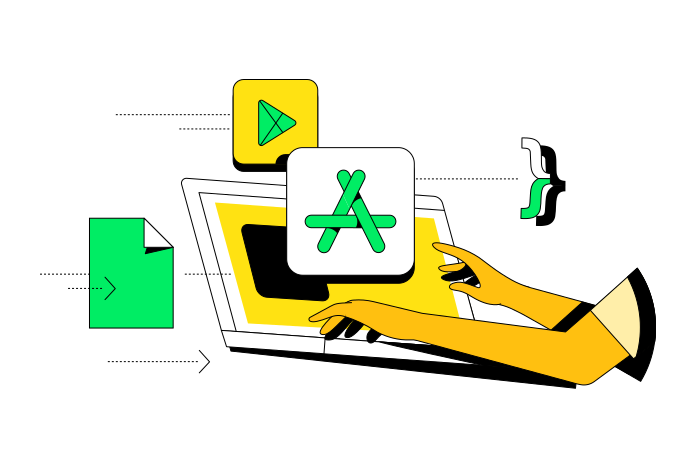
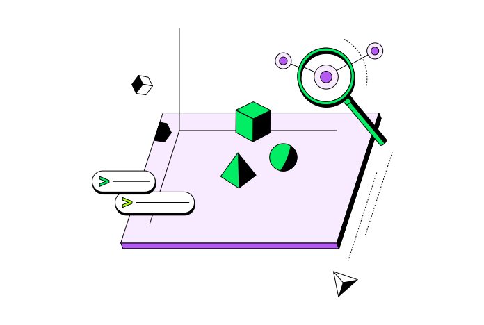

MongoDB Community Edition
La versión de MongoDB con código fuente disponible y de uso gratuito de la base de datos de documentos. Ideal para aprender, experimentar y desarrollar aplicaciones en un entorno autogestionado.
Descargar Community Explore MongoDB totalmente gestionadoAcelere la innovación con el modelo orientado a documentos
MongoDB simplifica la gestión de datos con su intuitivo modelo orientado a documentos, consolidando los datos en documentos similares a JSON. Esto elimina la complejidad, reduce el tiempo de inactividad y empodera a los desarrolladores para adaptar rápidamente los modelos de datos, impulsando una innovación más rápida y una mayor productividad.
Aprende los conceptos basicos de MongoDB

Aprender, crear prototipos y compilar libremente
Desarrolle con la base de datos principal de MongoDB. Community Edition es perfecta para crear entornos de desarrollo locales, prototipar nuevas aplicaciones y probar implementaciones.
Ejecute MongoDB en cualquier parte
Community Edition puede implementarse en cualquier entorno preferido: on-premises, en containers y en cloud. Con soporte para Windows, macOS y distribuciones de Linux, Community Edition facilita la compilación local o la integración en infraestructuras de nube autogestionadas.
Cómo instalar
Compile aplicaciones más inteligentes con búsqueda y búsqueda vectorial
Community Edition ahora incluye búsqueda de texto completo nativa y búsqueda vectorial. Estas capacidades permiten a los desarrolladores compilar aplicaciones modernas e inteligentes en entornos autogestionados. Comience a usar autocompletar, la generación de recuperación aumentada (RAG) y la búsqueda semántica. Cuando esté listo para escalar, migre fácilmente a MongoDB Atlas para una experiencia automatizada y totalmente gestionada.
Consulte la guia de inicio rapido